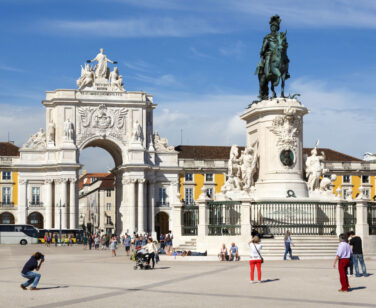

O Leste Europeu é uma região rica em história, cultura e beleza natural. Com cidades encantadoras, paisagens deslumbrantes e uma herança cultural diversa, esta parte da Europa oferece uma experiência única e inesquecível para os viajantes. Neste texto, vamos explorar alguns dos destinos mais fascinantes do Leste Europeu e os motivos pelos quais você deve considerá-los para sua próxima aventura.
Dicas para Viajar pelo Leste Europeu:

Sobre a História:
Conhecer um pouco sobre a história de cada país pode enriquecer sua experiência e conhecimento dos locais visitados.
Aprenda Frases Básicas no Idioma Local: Embora muitas pessoas falem inglês, aprender algumas frases no idioma local pode ser útil e apreciado.
Explore uma Gastronomia Local:
Cada país do Leste Europeu tem sua culinária única. Experimente pratos típicos como goulash na Hungria, pierogi na Polônia e cevapi na Croácia.
Use o Transporte Público:
O transporte público no Leste Europeu é geralmente eficiente e econômico. Trens e ônibus são ótimas opções para se locomover entre as cidades.
Respeite os Costumes Locais:
Cada país tem suas tradições e costumes. Respeitá-los é fundamental para uma experiência de viagem positiva.
Leste Europeu é uma região que oferece uma riqueza de experiências culturais, históricas e naturais. Com cidades deslumbrantes, paisagens variadas e uma herança cultural rica, esta parte da Europa é um destino imperdível para qualquer viajante. Planeje sua viagem ao Leste Europeu e descubra as maravilhas que esta fascinante região tem a oferecer.
.jpeg)